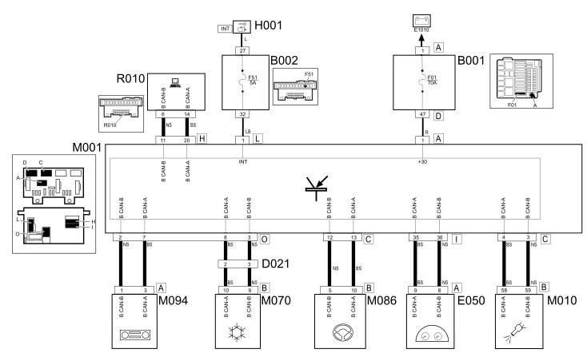
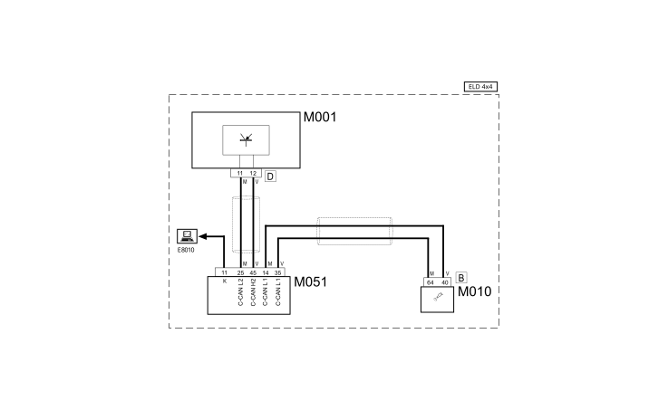

E1050 CAN CONNECTION LINES - WIRING DIAGRAM
- Path
- Electrical equipment > 1 ELECTRICAL FUNCTIONS > E10 POWER SUPPLY AND EARTHS > E1050 CAN CONNECTION LINES > E1050 CAN CONNECTION LINES - WIRING DIAGRAM
- Kind
- wiring diagram
- Applies to
- engines: 1.3 JTD 16v; all production periods
- Interactive page
- https://sloeber94.github.io/elrnDB-fPnd/en/#/169002281
Applies to: engines: 1.3 JTD 16v; all production periods
Wiring diagram


COMPONENTS
Component code | Description | Reference to the assembly |
|---|---|---|
Engine compartment junction unit | ||
Junction unit under dashboard | ||
Dashboard/air conditioning-heater coupling | - | |
Short circuit coupling | - | |
Instrument panel | ||
Ignition switch | ||
Body computer | ||
Engine management control unit | ||
ABS control unit | ||
Braking system control unit (NFR) | - | |
Selespeed gearbox control unit | - | |
Climate control sytem control unit | ||
Electric steering control unit | ||
Radio Receiver Node | - | |
Multiple diagnostic coupling |
Topics linked from this page (23)
- 1060G pressure pump electric control
- 3340A abs check/adjustment devices
- 4110D steering electrical control system
- 5040D air conditioner controls
- 5505A multi-function components
- 5505C vehicle compartment wiring
- 5520A ignition switch
- 5560B analogue control panel
- E50 ENGINE CONTROL AND MANAGEMENT SYSTEMS
- B001 JUNCTION UNIT
- B002 JUNCTION UNIT UNDER DASHBOARD
- D021 DASHBOARD/AIR CONDITIONING-HEATER COUPLING
- D097 SHORT CIRCUITING COUPLING
- H001 IGNITION SWITCH
- M001 BODY COMPUTER
- M010 ENGINE MANAGEMENT ECU
- M050 ABS CONTROL UNIT
- M051 Braking system control unit
- M054 ROBOTIZED TRANSMISSION CONTROL UNIT
- M070 CLIMATE CONTROL SYSTEM CONTROL UNIT
- M086 ELECTRIC STEERING CONTROL UNIT
- M094 RADIO RECEIVER NODE
- R010 MULTIPLE TESTER CONNECTION